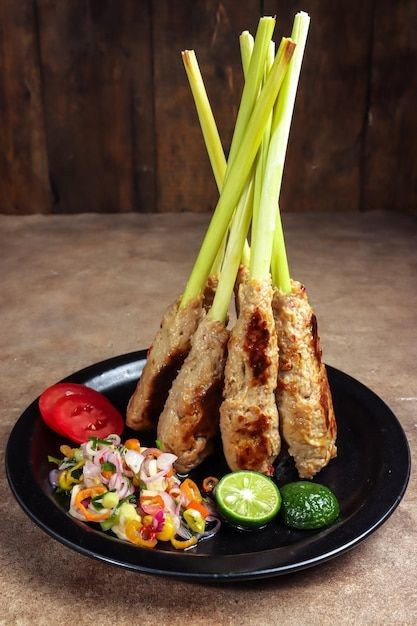

Tentang Sate Lilit
Sate Lilit adalah salah satu makanan khas Bali yang sangat populer. Berbeda dengan sate pada umumnya, Sate Lilit dibuat dengan melilitkan adonan daging yang sudah dibumbui ke batang serai atau tusukan bambu. Hidangan ini terkenal karena rasa gurih dan aroma khas rempah-rempahnya.
Bahan Utama
Sate Lilit biasanya menggunakan daging ayam, ikan, atau babi sebagai bahan utama. Daging ini dicampur dengan kelapa parut, santan, dan bumbu khas Bali seperti bawang merah, bawang putih, cabai, kunyit, dan serai.
Resep Pembuatan
Bahan
- 500 g daging ayam cincang
- 2 sdm minyak sayur
- 50 g bawang merah, cincang halus
- 20 g bawang putih, cincang halus
- 2 buah cabai merah, buang bijinya, cincang halus
- 10 g jahe, cincang halus
- 10 g lengkuas, cincang halus
- 5 g kencur, cincang halus
- 5 g kunyit, cincang halus
- 1/2 sdt merica bubuk
- 1 butir cengkih, haluskan
- 1/2 sdt pala bubu
- 2 g ketumbar halus
- 2 g biji wijen putih, haluskan
- 1/2 sdt merica
- 1 sdt garam
- 12 batang buah serai
- 1 lembar daun jeruk, iris halus
- 30 g kelapa parut
- 12 batang serai
Cara Pembuatan
- Panaskan minyak, tumis bawang merah dan bawang putih hingga wangi.
- Tambahkan rempah dan bumbu halus lainnya.Aduk hingga wangi dan layu. Angkat.
- Haluskan bumbu tumis dengan blender hingga lembut.
- Campurkan bumbu halus dengan daging ayam cincang. Aduk dengan tangan hingga benar-benar rata.
- Tambahkan daun jeruk dan kelapa, aduk hingga rata.
- Bagi adonan menjadi 12 bulatan.
- Taruh bulatan adonan di ujung batang serai. Tarik ke arah bawah sambil putar adonan mengelilingi ujung atas batang serai hingga menjadi bulat panjang.
- Panggang sate di atas bara api sambil balik-balik hingga matang.
- Angkat, sajikan dengan sambal.
Penyajian
Sate Lilit sering disajikan dengan nasi putih, sambal matah, dan sup kuah ikan. Hidangan ini adalah bagian penting dari upacara adat di Bali dan juga populer di restoran-restoran modern.